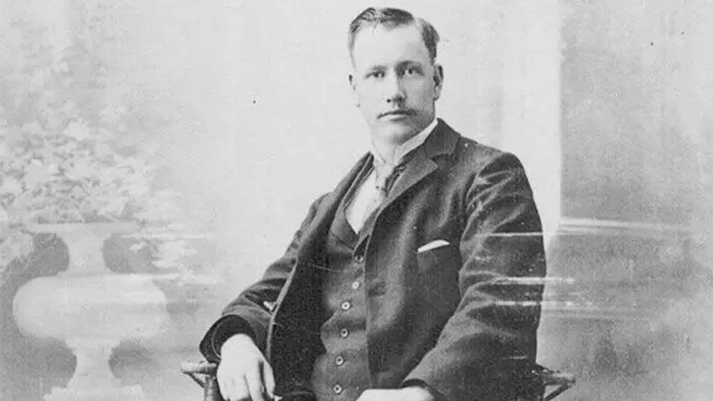
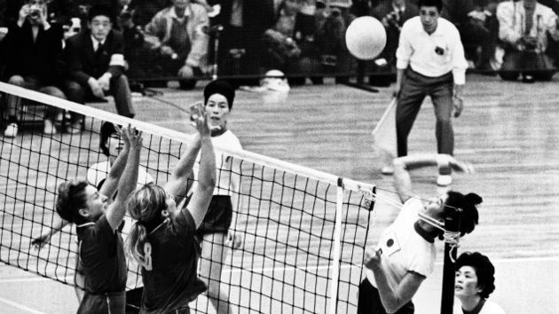
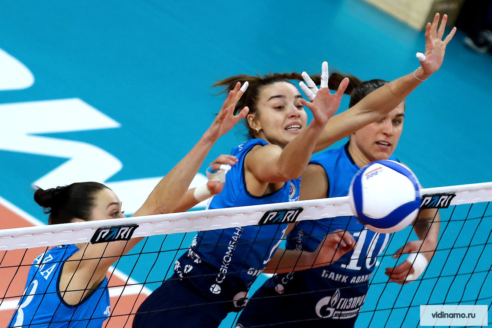

История волейбола
Волейбол — одна из самых популярных игр в мире. Узнайте, как он появился, развивался и стал таким, каким мы его знаем сегодня.
Зарождение волейбола
Волейбол был изобретён в 1895 году Уильямом Дж. Морганом, преподавателем физического воспитания в США. Изначально игра называлась «минтонет» и предназначалась для людей, которым был противопоказан баскетбол. Морган хотел создать игру, которая была бы менее травмоопасной, но при этом динамичной и увлекательной.
Первый матч по волейболу состоялся в 1896 году в Спрингфилде, штат Массачусетс. Игра быстро завоевала популярность благодаря своей простоте и доступности. Уже через несколько лет волейбол начал распространяться по всему миру, а в 1947 году была основана Международная федерация волейбола (FIVB).
Уильям Дж. Морган — создатель волейбола.
Развитие игры
С момента своего создания волейбол претерпел множество изменений. В 1920-е годы появились первые национальные федерации, а в 1947 году была основана Международная федерация волейбола (FIVB), которая способствовала популяризации игры по всему миру.
В 1964 году волейбол был включён в программу Олимпийских игр, что стало важным этапом в его развитии. Первый олимпийский турнир по волейболу прошёл в Токио, и с тех пор этот вид спорта стал неотъемлемой частью Олимпиад.
В 1996 году на Олимпийских играх в Атланте дебютировал пляжный волейбол, который быстро завоевал любовь зрителей благодаря своей зрелищности и динамичности.
Первый олимпийский турнир по волейболу в Токио, 1964 год.
Современный волейбол
Сегодня волейбол — это динамичная и зрелищная игра, которая объединяет миллионы людей по всему миру. Проводятся чемпионаты мира, Европы, Лиги чемпионов и другие престижные турниры.
Современный волейбол отличается высокой скоростью, сложной тактикой и зрелищными моментами. Игроки демонстрируют невероятную физическую подготовку, а матчи часто заканчиваются с минимальным перевесом.
Волейбол также активно развивается в школах и университетах, что делает его доступным для молодёжи. Многие страны имеют свои профессиональные лиги, которые привлекают лучших игроков со всего мира.
Современный волейбол — это скорость, тактика и зрелищность.
Интересные факты
- Первый официальный матч: Первый матч по волейболу состоялся в 1896 году в Спрингфилде, штат Массачусетс.
- Олимпийский дебют: Волейбол стал олимпийским видом спорта в 1964 году на играх в Токио.
- Самый длинный матч: Самый длинный волейбольный матч длился 75 часов и 30 минут. Он был сыгран в Нидерландах в 2011 году.
- Рекорд скорости подачи: Скорость подачи в волейболе может достигать 130 км/ч!
- Пляжный волейбол: Пляжный волейбол дебютировал на Олимпийских играх в 1996 году и с тех пор стал одним из самых популярных летних видов спорта.
Цитаты
«Волейбол — это не только про физику, но и про психологию. Важно победить не только соперника, но и самого себя.»
«Волейбол учит нас, что даже один человек может изменить ход игры. Главное — верить в себя и свою команду.»